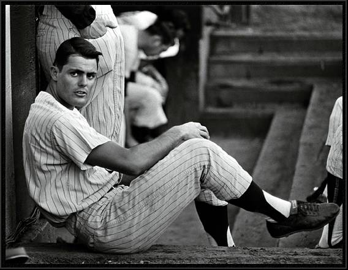

Sweet Lou Inducted into the Hall of Fame!
- Name: Lou Piniella
- Inducted: 2014
- Position: Outfielder

During Piniella's 10 years as manager the Mariners had seven winning seasons. He guided the team to its first trip to the postseason during the dramatic 1995 stretch run. Piniella was also at the helm during the Mariners record-setting 116-win 2001 season.
In all, the Mariners had a .542 winning percentage (840-711), won three American League West Division championships and made four postseason appearances during Piniella's years in Seattle. He is the winningest manager in club history.